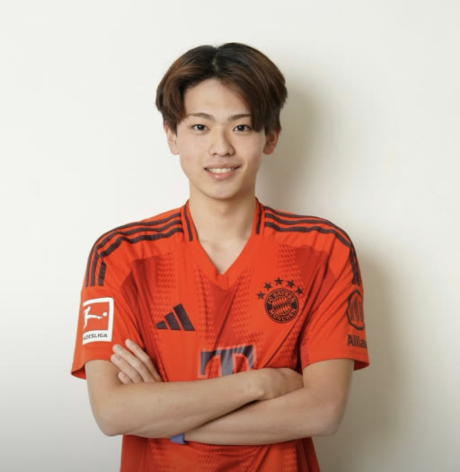

沖縄出身・バズ留学の代表
宮城 朝音
総フォロワー 4.0万人（全SNS合計） ／ 総再生 3億回 ／「沖縄から世界へ」
出会いが人生を楽しくし、その出会いがまた次の誰かのきっかけになる。
+メッセージを読む
バズ留学は、留学そのものをゴールにするのではなく、人との出会いが人生を楽しくしていくことを体現する場。あさとっち自身、海外での出会いや帰国後の出会いによって、人生が豊かで楽しいものになってきた。だから今度は、自分が誰かにとっての「素敵な出会い」をつくる側になりたい。その想いが、バズ留学の出発点にあるのだと思う。
留学を通じて、参加者には、未知の世界や今まで自分の中になかった世界に飛び込む力を身につけてほしい。そして、飛び込んだからこそ得られる経験を、その後の人生に活かしてほしい。
目指しているのは、海外で過ごす2週間だけで終わる留学ではなく、帰国後も仲間とつながり、ときには大きな壁を一緒に乗り越え、ときには新しいことに挑戦できる場をつくること。そして、参加した一人ひとりが、いつか誰かの次の一歩や出会いのきっかけをつくる人になってほしい。そんな願いが込められているのがバズ留学。